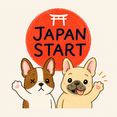

Gold words are ones you've already learned
Practice — work through phrases freely.
Test — one mistake ends it. Clear to unlock the next block.

Memorise them, then take the quiz
Practice — work through the block freely, no pass/fail.
Test — one mistake ends it. Clear the test to unlock the next block.